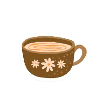

the drink switch
Somehow your bru ended up in my tea story, which feels exactly like the kind of detail I’d remember.
chai tradition
I feel like me better at writing or coding than saying things in person, so here it is 🫣.
Figured better saying it fully now then tryna make up words when i see you cuz it gets stuck istg T_T.
I really like what this little routine has quietly become, and to write it down seemed better way to express it.
little note
chai, Zus, small jokes, easy company
somehow seven meetups went by very quickly
i like this. i like you.

why this exists
I’ve really been enjoying our time together. The more we kept meeting, the more it stopped feeling random and started feeling like something I genuinely care to honestly.
Also, thought this would be nicer to say it all in one go instead of shallowing my words midway...
things i like about us
Somehow your bru ended up in my tea story, which feels exactly like the kind of detail I’d remember.
Being around you feels easy. Nothing needs to be performed, and I like that more than I can explain.
Chai partner, sleepyhead, hyper Isya, all the tiny teasing moments. They make this feel light and real.
7 meetups actually felt unreal, went by pretty fast, it was nice too. at the end, just seeing when the next one would be. Ik might sound excessive but I really do like spending time with you hehe.
Added bonus: your love for doggies makes this part feel especially fitting.
what i'm trying to say
soft ending
If you feel the same, I’d really like to keep this little chai tradition going and see what it becomes.
so... maybe this is where i ask you properly.
issokay, appreciate your thoughts and i’m glad i opened up.
we can keep things soft and just let it grow naturally.
short version
I just wanted you to know this means something to me very much even tho i dun say it enuf.